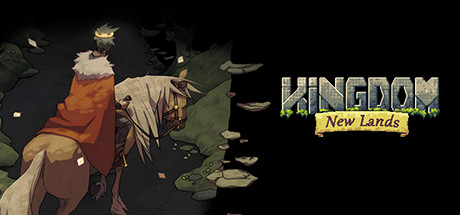
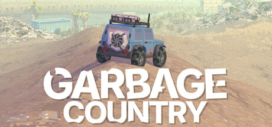
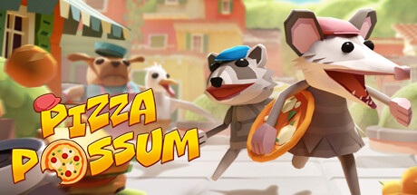

Thomas van den Berg creates games and game-like things with a small studio named ‘noio games’.
I love working on code & art, and the magic that happens when they come together.
This page is a combination blog and portfolio of some things I've done.
The best known thing I made is probably the Kingdom Series, a minimalist strategy game in a pixel art style.
Want to get in touch? Ask anything? Just chat? Email or tweet me.
These are the commercial games I've worked on, and you'll find some more experimental stuff in my blog below.



{% for post in site.posts %}
{% assign main_tag = '' %}
{% for tag in post.tags %}
{% if tag != "posts" %}
{% assign main_tag = tag %}
{% endif %}
{% endfor %}